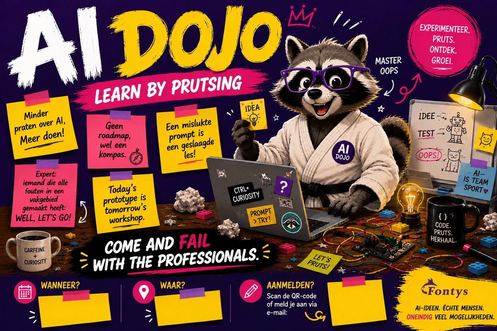

Poster

Wanneer · Waar · Aanmelden
Waar?
Aanmelden?
Graag even laten weten dat je komt — dan weten we ongeveer hoeveel stoelen we nodig hebben. Met je Fontys-pas en een mok kun je koffie tappen.
c.crombach@fontys.nlVorige keren
Vorige keren
Wat is dit?
Minder praten over AI.
Meer doen!
Laagdrempelig samenkomen en uitwisselen. Misschien wil iemand wel iets vertellen wat-ie zelf al doet (of zou willen doen) met AI — leuk om mee af te trappen, maar niet te lang.
Gedacht aan Fontys-medewerkers die bijvoorbeeld de AI-3-daagse of Accelerate IT gedaan hebben: mensen die al aan het experimenteren zijn. Verder gewoon wat aanklooien, want dat doen we te weinig.
Vroeger had je van die computerclubs: een deel sjouwde zijn eigen computer mee (laptops hadden we toen nog niet) en ging daar zitten doen wat ze anders thuis zouden doen — en af en toe kletsen, elkaar dingen laten zien — “Heb je dit al gezien?” — superleerzaam, idealiter niet per se doelgericht.
- Geen roadmap, wel een kompas.
- Een mislukte prompt is een geslaagde les!
- Experimenteer. Pruts. Ontdek. Groei.
- AI is team sport <3
Veelgestelde vragen
- Moet ik iets voorbereiden?
- Niet per se — kom zoals je bent. Wel aan te raden: neem een laptop mee, zodat je zelf ook iets kunt doen.
- Is dit een training?
- Nee — geen cursus of training. Het gaat om ervaringen uitwisselen: zelf iets proberen, of gewoon praten met mensen die bezig zijn met AI.
- Voor wie is het?
- Fontys-collega’s die met AI willen prutsen, vooral als je al een beetje bezig bent — maar nieuwsgierigheid telt zwaarder dan ervaring.
- Waarom aanmelden?
- Even laten weten dat je komt helpt ons inschatten hoeveel stoelen/ruimte we nodig hebben. Met je eigen mok en je Fontyskaart kun je koffie tappen en er is water... What else do you need to pruts?
- Wat als ik alleen wil kijken?
- Ook goed. Luisteren en meekijken is prima. Niemand hoeft te performen.